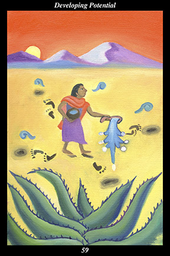

 | IMAGE: As the sun sets behind the mountains, a female warrior chants while she offers water to the four directions of the desert wilderness. The water she pours into the sand is drawn with jade beads and small conch shells. In the foreground of the scene a great maguey cactus grows. |
INTERPRETATION
This hexagram depicts the spirit of seeds that still remain hidden. The four directions symbolize the full range of the spirit warrior’s action, which encompasses both the sphere of the world and the circle of the seasons. The desert wilderness symbolizes the inner landscape of achievement, which each of us must face alone and independent in our effort to make a contribution to the whole. The setting sun symbolizes the end of an era, which inspires us to act in a timely manner and with a seriousness of purpose. The female warrior symbolizes the feminine creative force, who conceives in order to nurture and sustain that which is valuable. By pouring water on the desert sand, she actively encourages the growth of those seeds still hidden underground. The blue speech glyphs of her song symbolize the ritual meaning her everyday actions acquire in her moment-to-moment effort to unleash something new and wondrous upon the world. Taken together, these symbols represent the unified and integrated nature of the feminine half of the spirit warrior. That the water is drawn with jade beads and conch shells means that you recognize and revere the precious nature of that which evokes and sustains life. The full-grown maguey cactus symbolizes the success of past efforts to make hidden seeds sprout. Taken together, these symbols mean that you find a seed invisible to others that can thrive in even the most difficult conditions.
ACTION
The feminine half of the spirit warrior creates new possibilities for success. Because present circumstances are neither as fulfilling nor as secure as they once were, this is a time for actively planting the seeds of a smooth transition into more rewarding and dependable circumstances: since it is impossible at this stage to know which of your actions will ultimately bear fruit, it is necessary to make overtures in every arena in which you might conceivably be well-received. By daring to nurture the undeveloped potential inherent to every situation, you break not only your own expectations but those of others and, even though your actions might appear to lack conscious planning or purpose, they actually set the stage for your next endeavor. Look at your strengths and capabilities with new eyes, daring to imagine how different opportunities might nurture your own hidden potential. Explore new kinds of relationships, daring to imagine how different people might draw out parts of yourself you have not yet discovered. Because you seek success in order to bring
benefit to the whole, you are aided by unseen forces whose sole intent is to bring you closer to your destiny.
INTENT
Before things actually come to an end, we still have the foundation from which to build a bridge to the next beginning. Rather than pursuing a single course of action, however, this is a time for opening as many doors and exploring as many roads as possible: rather than basing decisions on precedents and past experience, watch for coincidences to emerge that inspire you to make decisions in a manner that surprises you. Before things actually begin anew, we still have the time to fully integrate the lessons of the past. Rather than leaping too quickly into the most comfortable circumstance, therefore, this is a time for becoming stronger and more content in and of yourself: rather than succumbing to an unrealistic nostalgia for the past, risk exploring numerous detours even if they do not appear to lead to your future. Nurture the undeveloped potential you find wherever you are and your own development continues forever unabated.
SUMMARY
Pay attention to details others ignore. Take an interest in things others think beneath them. Take every possibility seriously, no matter how remote it seems. Leave no stone unturned in your search for the best road forward. Look at every chance to
benefit others as an opportunity to hone your skills and increase your capabilities. Every act of generosity is a seed that eventually bears fruit.
THE LINE CHANGES
1° When the body is not held sacred, it is mistreated and held in contempt—when nature is not held sacred, it is injured and held in contempt. As an individual, care for your body as if it were a noble being facing death. As a member of society, care for nature as if it were the visible half of spirit.
2° When loved ones are not held sacred, they live and die without being seen—when humanity is not held sacred, it turns on itself with tooth and claw. As an individual, treat every loved one like a miracle. As a member of society, do not allow divide and conquer tactics to work.
3° When learning is not held sacred, people can be herded like sheep—when qualified people are not held sacred, corrupt people rise to the top. As an individual, fulfill your infinite potential. As a member of society, do not reward power mongers and dilettantes with any say over your life.
4° When creativity is not held sacred, people only know how to destroy—when creative people are not held sacred, the only kind of change people know is decay. As an individual, reunite the inner and outer worlds. As a member of society, upset stagnant balance so dynamic balance can be restored.
5° When ethical conduct is held sacred, people correct their own faults—when ethical leaders are held sacred, the whole world trusts their fairness. As an individual, keep one foot on the pivot point of dignity at all times. As a member of society, treat everyone like your beloved grandmother.
6° When wisdom is held sacred, people
benefit by benefiting the whole—when wise leaders are held sacred, the whole world trusts their vision. As an individual, pool resources and share responsibilities. As a member of society, evoke peace and prospering for all.